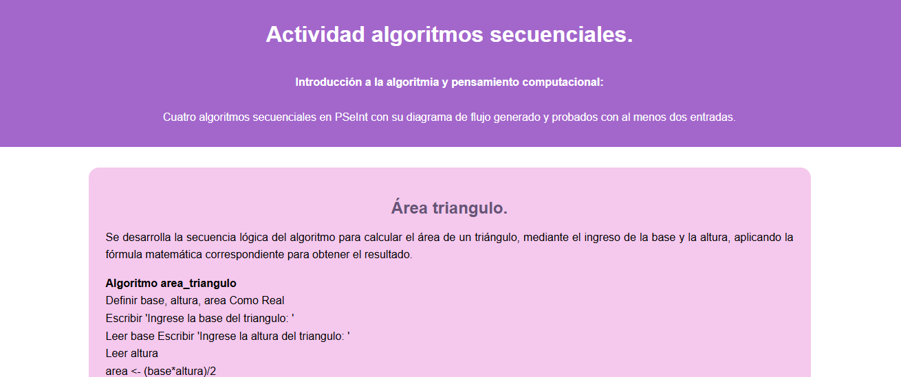
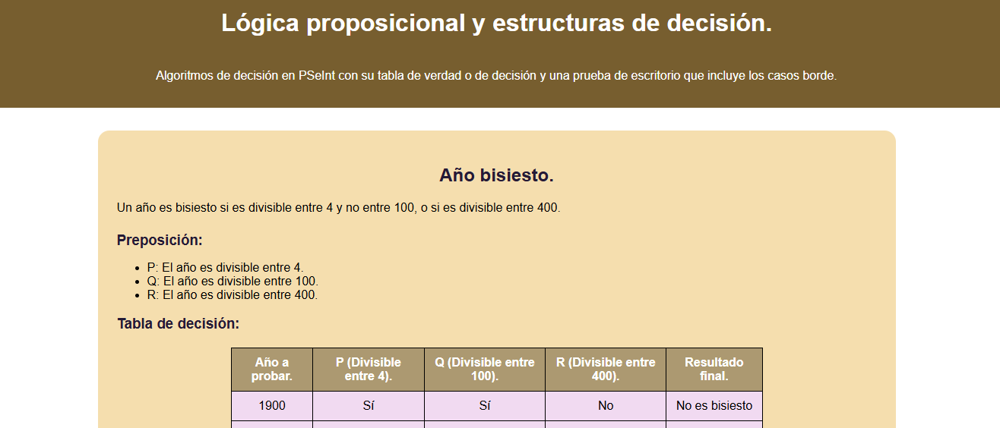

Algoritmia:
Actividad algoritmos secuenciales:
Se desarrollan cuatro ejercicios prácticos de algoritmos secuenciales utilizando PSeInt, aplicando instrucciones de entrada, procesamiento y salida de datos para resolver diferentes operaciones matemáticas.

Actividad lógica proposicional y estructuras de decisión:
Se desarrollan ejercicios de algoritmos de decisión en PSeInt, incluyendo tablas de decisión y pruebas de escritorio con casos borde para validar su funcionamiento.
